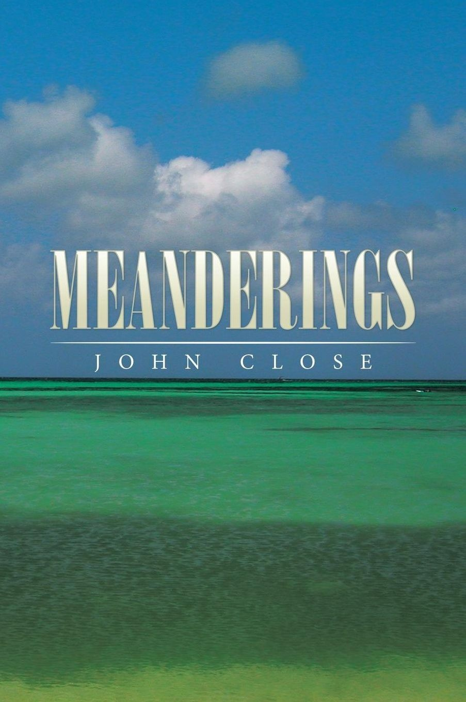
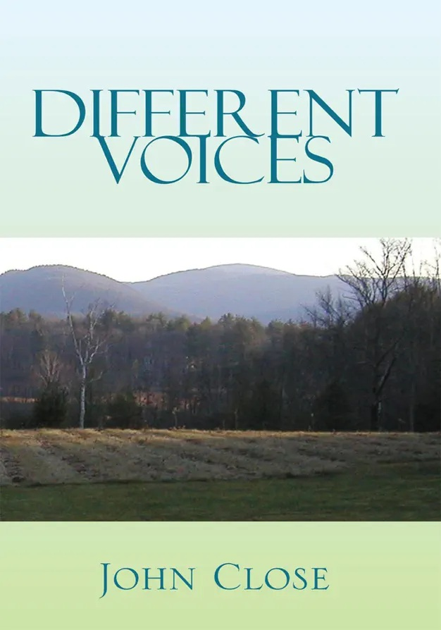

John Close
Meanderings (2015)
Different Voices (2010)
- Publisher
- Xlibris
- Published
- December 30, 2015
- Length
- 258 pages
- Editions
- Paperback, hardcover, ebook
The newer collection · Xlibris, 2015
Meanderings
The book introduces itself in four lines of verse. A poem, it says, is a place for hearts to feel and minds to see. It calls itself a plea
“for understanding, for empathy.”
Inside are poems such as Learnin’, a father’s blunt lesson about fairness in a vernacular voice, and Veterans, about the men who served “over there” and the question some of them would not answer.
Poem schedule
Pick a poem by its mark
Set out like the bar list on a reinforcing-steel placing drawing, where every bar has a mark and a place. Marks drawn for this page.
| Mark | Poem | Book | Where | In brief |
|---|---|---|---|---|
| M1 | Learnin’ | Meanderings | Contents, Google Play ebook | A father’s lesson that nobody promised life would be fair, learned at three and again, harder, at four. Two short stanzas in a vernacular voice. |
| M2 | Destination | Meanderings | Contents, Google Play ebook | — |
| M3 | Veterans | Meanderings | Contents, Google Play ebook | The speaker served, though not “over there.” Some who were would tell it; others answered with a silent stare. |
| M4 | Backsliding | Meanderings | Contents, Google Play ebook | — |
| D1 | Blockwatcher | Different Voices | p. 21, Google Play ebook | — |
| D2 | Neighborhood | Different Voices | p. 40, Google Play ebook | — |
| D3 | Astoria | Different Voices | p. 225, Google Play ebook | — |
| D4 | Elmhurst | Different Voices | p. 346, Google Play ebook | Christmas Eve in a suit and tie, a walk under a star-lit sky to Mass at the church of St. Bartholomew. |
Page numbers follow the Google Play ebook edition of Different Voices; print pages may differ.
Elmhurst
John Close grew up in Elmhurst, Queens, and went on to Brooklyn Technical High School.
“Elmhurst” is also a poem in Different Voices: a walk to Mass at St. Bartholomew’s in the last hour of Christmas Eve.

The first collection · Xlibris, 2010
Different Voices
Nearly five hundred pages of poems that treat thought as a journey, with stops a reader may recognize from their own life.
Two of them carry the names of Queens neighborhoods.
Paperback and ebook. See where to order
Order schedule
Where to find each edition
| Book | Edition | ISBN | Store |
|---|---|---|---|
| Meanderings | Paperback | 9781514432730 | Barnes & Noble |
| Hardcover | 9781514432747 | AbeBooks | |
| Ebook | — | Apple Books · Google Play | |
| Different Voices | Paperback | 9781450050746 | Barnes & Noble |
| Ebook | — | Apple Books · Google Play |
Store links open in a new tab.